O que são as mudanças climáticas?
O termo mudança climática refere-se à variação do clima em escala global ou dos climas regionais da Terra ao longo do
tempo. Estas variações dizem respeito a mudanças de temperatura, precipitação, nebulosidade e outros fenômenos
climáticos em relação às médias históricas.
Quais são as evidências dessas mudanças?
A temperatura do planeta aumenta cada vez mais
Segundo a NOAA (National Oceanic and Atmospheric Administration, ou Administração Oceânica e Atmosférica Nacional),
2019 foi o segundo ano mais quente desde o início das medições com termômetros, em 1880. Perde apenas para 2016, e
por uma diferença pequena de 0,04 °C. A década de 2010 foi a mais quente de todos os tempos – os últimos cinco anos
foram todos os mais escaldantes desde o início das medições. 2019 foi o 43° ano consecutivo em que as temperaturas
ficaram acima da média.
Desde 1880, as temperaturas globais aumentaram mais de 1ºC (1.8ºF), enquanto os níveis de dióxido de carbono na
atmosfera cresceram de 280 partes por milhão (ppm) para mais de 400ppm.
Abaixo é possível observar a escalada das temperaturas globais:
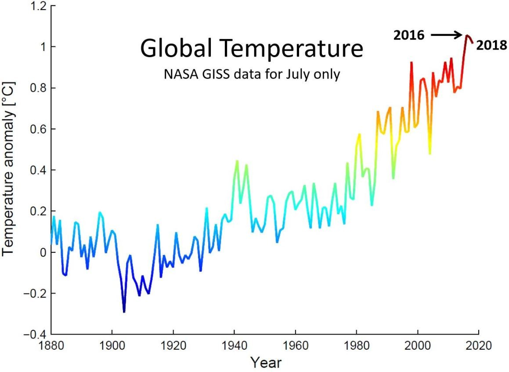
O gelo do Ártico está derretendo por inteiro
As geleiras da Groenlândia e da Antártica também estão derretendo rapidamente. Segundo a revista científica Science,
entre 1992 e 2011 as geleiras da Groenlândia perderam 152 bilhões de toneladas de gelo por ano. Já na Antártica, as
geleiras derreteram 71 bilhões de toneladas de gelo por ano. Na Groenlândia, cerca de 97% da superfície de gelo já
passou por algum derretimento.
As imagens de satélite abaixo mostram a cobertura de gelo no mar em um ano frio, 2012, e em um ano quente, 2016:
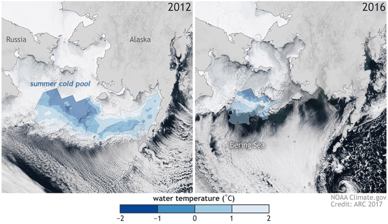
A imagem abaixo mostra o efeito do aquecimento nas geleiras do Alasca:
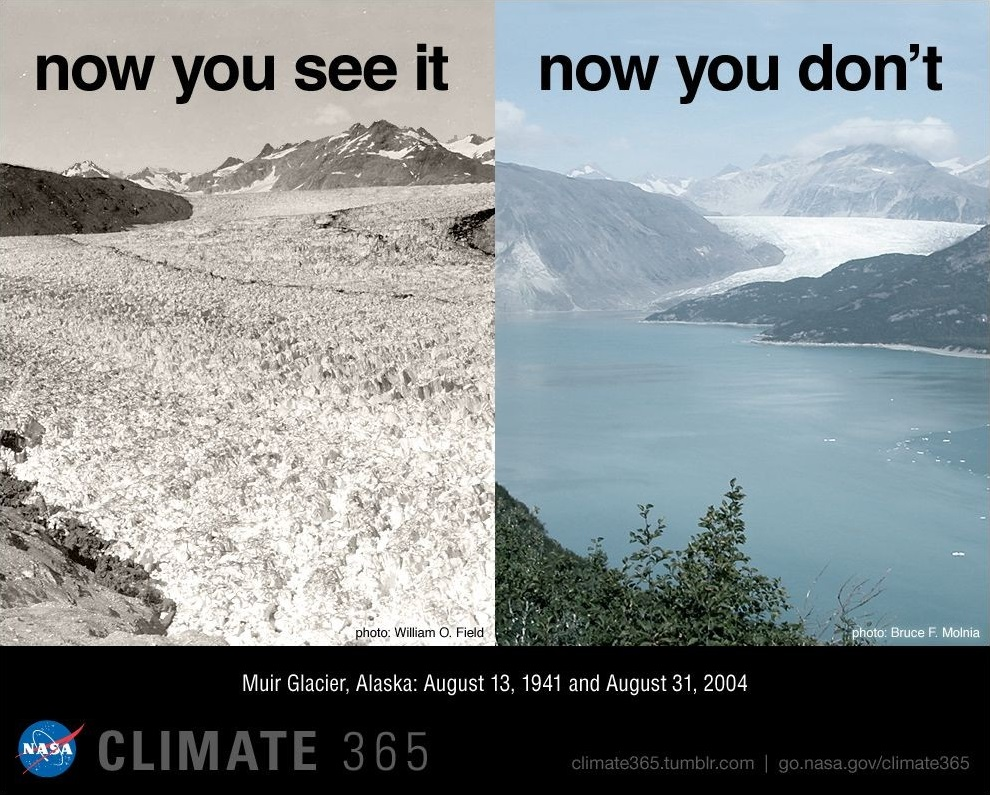
Links de sites com mais informações o tópico:
Um iceberg de um trilhão de toneladas, um dos maiores já registrados, se desprendeu de uma plataforma de gelo gigantesca
na Antártica, que possui o tamanho do Distrito Federal
Após ser atingida por uma onda de calor, a ilha Eagle, na península Antártica, sofreu uma transformação drástica de
4 a 13 de fevereiro. Cerca de 20% da neve da ilha derreteu durante esse período e poças de água derretidas surgiram
na superfície
Com 18 graus, Antártica acaba de registrar temperatura mais alta da história
Os mares estão subindo
Os mares agora estão subindo 3,66 milímetros por ano, o que é 2,5 vezes mais rápido que a taxa de 1900 a 1990. Até 2100,
o nível dos oceanos deve aumentar mais de um metro.
Isso acontece por consequência do aquecimento global, que esquenta as águas e provoca a sua expansão térmica, fazendo-as
aumentar em volume. Outro efeito do aquecimento é o derretimento dos gelos montanhosos e polares, que adicionam mais
água líquida aos mares.
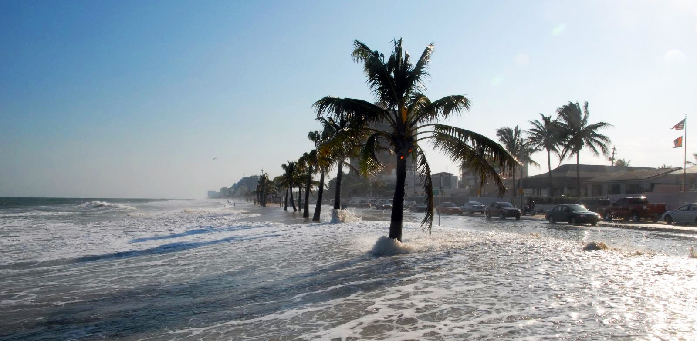
Links de sites com mais informações o tópico:
Nível do mar sobe 2,5 vezes mais rapidamente do que no século 20, diz relatório da ONU
Os corais estão morrendo
Os recifes de coral desempenham um papel crítico no mar. Eles fornecem abrigo para um quarto de todas as espécies de
animais que vivem no mar, regulam o oxigênio e dióxido de carbono, além de proteger as costas.
Eles geralmente crescem em águas rasas nos trópicos, onde eles sintetizam a luz do sol. Com a elevação do nível do mar,
os recifes de corais desaparecendo em todo o planeta, uma vez que já não recebem luz solar suficiente.
Além de não conseguir sintetizar luz solar o suficiente, outro problema que os corais enfrentam é a alta temperatura
dos mares, que faz eles se contrairem e sufocarem as algas dentro deles, consequentemente as fazendo soltar toxinas
para forçar o coral a expulsá-las. Essas toxinas deixam os corais doentes e, por fim, os matam.
Na foto abaixo é possível ver um coral saudável (em dezembro de 2014), morrendo (em fevereiro de 2015) e, por fim, morto (em agosto de 2015).
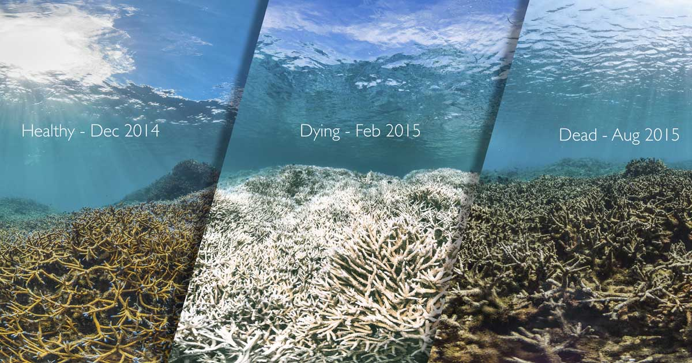
Links de sites com mais informações o tópico:
Corais estão ameaçados por mudanças climáticas
Os recifes de corais estão morrendo. Você sabe por quê?
A Grande Barreira de Corais está morrendo por causa do aquecimento dos oceanos
Os furacões estão mais fortes
A temporada de furacões do Atlântico Norte em 2017 foi mais violenta do que o normal. Foram registrados seis fortes
tempestades do tipo, contra uma média esperada sempre entre quatro ou cinco.
De acordo com um estudo publicado na revista ‘Science’ a explicação estaria no aquecimento do Atlântico em relação ao
restante dos oceanos. Os cientistas usaram um conjunto de modelos experimentais em alta resolução, mostramos que o
aumento dos furacões de 2017 não foi causado pelas condições do fenômeno La Niña, do Oceano Pacífico. E, sim,
principalmente, por condições da superfície marítima mais quente do Atlântico Norte tropical.
Os dados trazem conclusões alarmantes: No futuro, um padrão semelhante de aquecimento do Atlântico Norte, somado ao
aumento de temperatura da superfície do mar a longo prazo, provavelmente levará a números ainda maiores de furacões.
O estudo ainda diz que o principal fator que controla atividade dos furacões no Atlântico parece ser o quanto o Atlântico
tropical se aquece mais em relação ao resto dos oceanos da Terra.
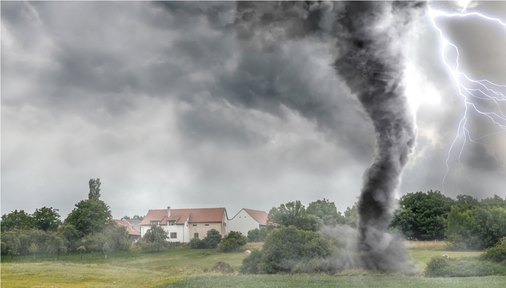
Links de sites com mais informações o tópico:
O Furacão Irma ganhou força por causa do aquecimento global
Especialista diz que mudança climática está aumentando a incidência de furacões no planeta
As ondas de calor estão mais frequentes
O mundo está ficando mais quente, mas umas áreas esquentarão mais do que outras e as ondas de calor ficarão mais
frequentes e mais letais. O Brasil vai ser um dos países mais afetados pelas ondas mortais de calor que devem se
espalhar pelo globo ao longo do século XXI, ainda que se atinja a meta do Acordo de Paris de manter o aquecimento
global abaixo do patamar de 2º C até 2100.
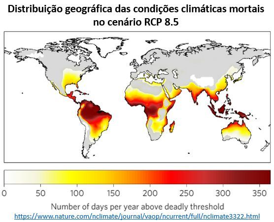
A figura acima mostra o número de dias por ano que excede o limiar de temperatura e umidade para além do qual as
condições climáticas se tornam mortíferas no cenário RCP 8.5 do Painel Intergovernamental sobre Mudanças Climáticas
(IPCC). O artigo “Global risk of deadly heat”, publicado no periódico Nature Climate Change (19/06/2017) considera
que as mudanças climáticas vão tornar mais frequentes as ondas de calor letais, no cenário de manutenção atual das
emissões de gases de efeito estufa (GEE).
Atualmente, 30% dos habitantes da Terra passam por períodos de calor extremo em algum momento do ano, mas ao longo
do corrente século, três quartos da população mundial enfrentarão ondas mortais de calor. Mesmo com o cumprimento
dos objetivos do Acordo de Paris, a população exposta ao calor mortal será de cerca de 50%.
Links de sites com mais informações o tópico:
Aquecimento global e ondas mortais de calor, artigo de José Eustáquio Diniz Alves
O que causa o calor que atinge a Europa?
As evidências físicas são suficientes para atribuir a influência humana no clima global
A evidência de que as mudanças generalizadas observadas no sistema climático, desde os anos 50, são atribuíveis a
influências antrópicas tem crescido exponencialmente. A conexão entre a influência humana e as mudanças climáticas
é analisada e discutida baseada em uma extensa literatura cientifica. São mais de 15.000 artigos científicos abordando
o tema “human influence” e “climate” na base do Google Acadêmico.
O gráfico abaixo compara o aumento real da temperatura (em preto) observado nos últimos 100 anos em comparação com
o aumento causado apenas pela ação natural (em azul) e o aumento causado pela tanto pela ação natural quanto pela
ação humana (em rosa).
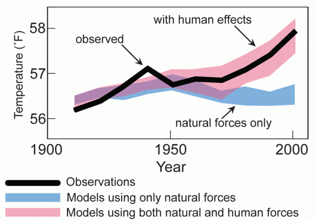
O que causa as mudanças climáticas?
As mudanças climáticas podem ter causas naturais ou antrópicas. Entre essas causas naturais aparecem eventos terrestres,
como atividade vulcânica, a orogenia (formação das montanhas), as alterações nos oceanos e na atmosfera, e o deslocamento
continental, que ajudam a elevar a temperatura média da Terra. Existem também causas extraterrestres, como a dinâmica da
constante solar, isto é, as mudanças na quantidade de energia recebida na forma de radiação solar por unidade de tempo
e superfície. Nos últimos 150 anos, no entanto, o planeta teve sua temperatura aumentada de maneira considerável, e
pesquisas indicam que essa grande mudança foi causada pelas ações dos seres humanos.
As mudanças climáticas causadas pelo homem estão associadas ao aumento da emissão de gases de efeito estufa por queima
de combustível fósseis, queimadas, desmatamento, decomposição de lixo, entre outras causas.
Para entender o efeito estufa pense em um veículo parado sob luz do sol com todos os vidros fechados. Os raios chegam ao
veículo na forma de radiação solar visível, passam pelos vidros e aquecem o interior do veículo. O calor aí gerado tem
dificuldade para sair pelos vidros, aquecendo o interior do veículo.
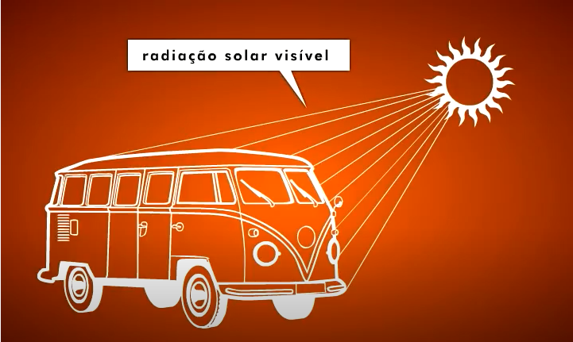
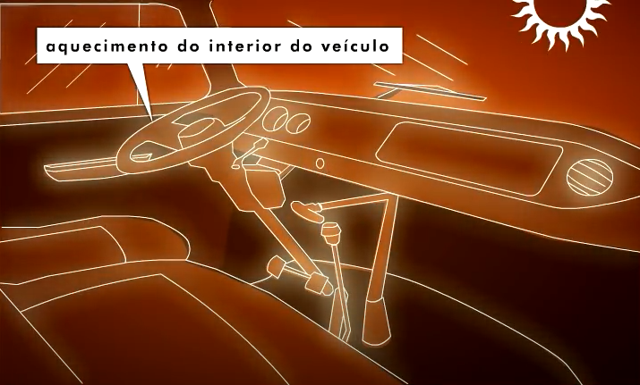
O mesmo ocorre com a atmosfera da terra, alguns gases como o vapor d'água e o guás carbônico funcionam como o vidro do veículo,
deixando entrar a radiação mas dificultando o retorno do calor para o espaço.
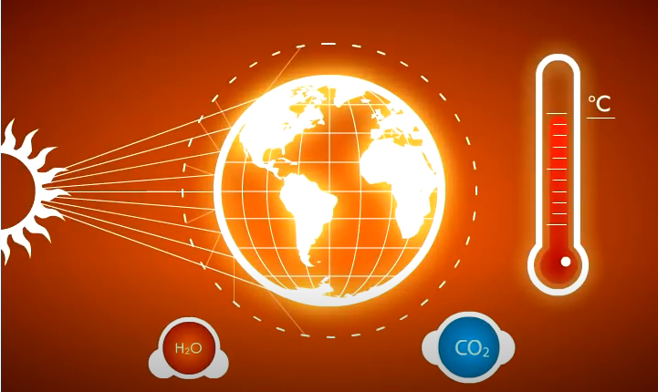
O efeito estufa é um fenômeno natural e muito importante que faz com que a temperatura média da superfície da terra seja
de 15°C - sem ele a temperatura media seria 18°C -, porém, quando aumenta a concentração de gases estufa na atmosfera, o
efeito estufa fica mais intenso e fica mais dificil o calor ir para o espaço. Essa diferença causa o aquecimento da baixa
atmosfera, elevando a temperatura média da terra e causando mudanças climáticas.
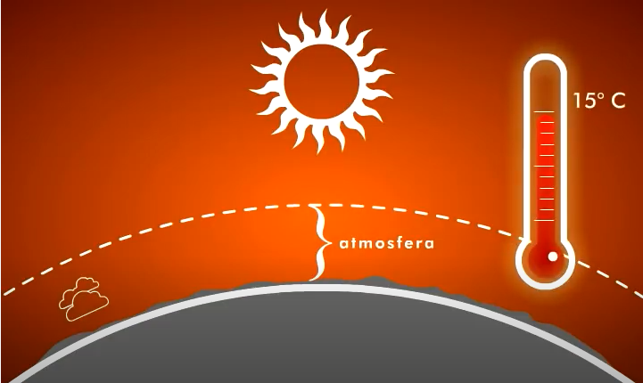
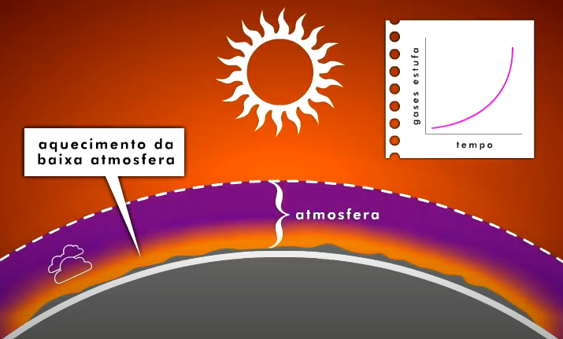
Os Gases de Efeito Estufa (GEE) mais relevantes são: o vapor de água (H2O), o dióxido de carbono (CO2), o metano (CH4) e o
óxido nitroso (N2O).
De maneira geral, o Dióxido de Carbono (CO2) é emitido em processos de combustão, como em motores e caldeiras. O CO2 é o GEE
mais relevante e, globalmente, tem origem principalmente (87%) na queima de combustíveis fósseis como carvão mineral, o gás
natural e o petróleo. O desmatamento é a segunda principal atividade responsável pelas emissões de Dióxido de Carbono, seguida
das atividades industriais como a produção de cimento.
O Metano (CH4) é principalmente originado em processos biológicos, como o tratamento de efluentes líquidos e em aterros sanitários,
e nas atividades agropecuárias, principalmente na produção de ruminantes. A extração e refino de petróleo também é grande emissora
de metano. Outras atividades que também incluem a produção de metano são a produção de arroz e a queima de biomassa.
Já o Óxido Nitroso (N2O) pode ser emitido em processos industriais e na agricultura. Na indústria, pode ter origem, por exemplo,
na produção de ácido adípico e de alumínio. Na agricultura, tem origem na utilização de fertilizantes. Ainda, emissões de N2O
podem decorrer de processos biológicos de nitrificação e denitrificação, em sistemas de tratamento de esgoto ou no solo.
Links de sites com mais informações o tópico:
5 fontes de gases de efeito estufa
Causas e gases de efeito estufa
Quais são as consequências futuras?
O Painel Intergovernamental sobre Mudanças Climáticas (Intergovernmental Panel on Climate Change - IPCC) é um órgão das Nações
Unidas que tem como função fazer avaliações de informações científicas sobre as alterações climáticas.
Periodicamente, o painel publica relatórios que mostram dados importantes sobre as mudanças climáticas e suas consequências.
No Quinto Relatório de Avaliação do IPCC, por exemplo, o órgão deixou claro que, se medidas urgentes não forem tomadas para
estabilizar as emissões dos gases até 2100, o aumento da temperatura global excederá 2 ºC dos níveis pré-industriais. Esse
aumento poderá ser catastrófico.
Os maiores castigados pelas mudanças climáticas serão provavelmente os países tropicais, tais como o Brasil. Segundo os relatórios
do IPCC, poderão ocorrer uma série de inundações, em virtude da intensificação das tempestades, e períodos longos de estiagem.
Nessas duas situações, a pecuária e a agricultura poderão ser prejudicadas, assim como a sobrevivência de diversas espécies.
Além disso, algumas regiões poderão sofrer com a grande quantidade de chuvas, o que ocasionará deslizamentos constantes de
terra e aumento das enchentes. Outro ponto alarmante diz respeito às áreas costeiras, que sofrerão com o aumento do nível
do mar, graças ao degelo das geleiras ocasionado pelo aumento da temperatura média do planeta.
As áreas secas do planeta sofrerão ainda mais com a falta de água. Sendo assim, a água potável, que já é escassa em algumas
regiões, poderá ser motivo de mortes e de disputas políticas. Além disso, com o aumento da seca, a ocorrência de incêndios
poderá ser mais frequente, ocasionando perda de biodiversidade e ameaçando a vida da população.
Diante desse quadro tão assustador, não é difícil concluir que diversas espécies de plantas e animais entrarão em extinção.
Fato esse que já é possível observar nos dias atuais. Além disso, a produção de alimentos poderá diminuir, uma vez que
qualquer mudança climática afeta diretamente o cultivo de diversas espécies. Com isso, ocorrerá uma dificuldade de acesso à
alimentação, não somente aliada à baixa produção mas também pela possível elevação dos preços.
Não podemos esquecer-nos também de que a saúde humana pode ser afetada gravemente com as alterações climáticas. Problemas
tais como insolação, alergias, doenças transmitidas por mosquitos (como a dengue e a malária), desnutrição e fome podem ser
intensificados devido ao aumento da temperatura global.
Vale salientar ainda que, segundo o IPCC, mesmo que as emissões de gases do efeito estufa diminuam, a Terra continuará sofrendo
com os danos residuais e terá que aprender a lidar com o aumento gradual da temperatura..
Apesar de serem inevitáveis alguns dos problemas relatados, a diminuição da emissão de gases de efeito estufa é necessária
para que a intensidade desses problemas seja diminuída. Além disso, é fundamental que todos os países estejam juntos para
tomar decisões que poderão ajudar as populações a enfrentarem todos os problemas que estão por vir.
Aquecimento global de 1.5°C
Em outubro de 2018, o IPCC publicou um relatório especial sobre os impactos do aquecimento global de 1,5°C, concluindo que
limitar o aquecimento global a 1,5°C exigiria mudanças rápidas, profundas e sem precedentes em todos os aspectos da sociedade.
Com benefícios claros para as pessoas e ecossistemas naturais, o relatório constatou que limitar o aquecimento global a 1,5°C,
em comparação com os 2°C, poderia garantir uma sociedade mais sustentável e equitativa.
Enquanto as estimativas anteriores se concentravam em estimar os danos se as temperaturas médias subissem 2°C, este relatório
mostra que muitos dos impactos adversos das mudanças climáticas virão na marca de 1,5°C.
O relatório também destaca vários impactos das mudanças climáticas que poderiam ser evitados ao limitar o aquecimento global a
1,5ºC, em comparação a 2ºC ou mais. Por exemplo, em 2100, a elevação global do nível do mar seria 10 cm mais baixa com aquecimento
global de 1,5°C, em comparação com 2°C.
A probabilidade de um oceano Ártico livre de gelo marinho no verão seria uma vez por século com o aquecimento global de 1,5°C, em
comparação com pelo menos uma vez por década com 2°C. Os recifes de corais declinariam de 70 a 90% com o aquecimento global de 1,5°C
, enquanto praticamente todos (> 99%) seriam perdidos com 2°C.
O relatório conclui que limitar o aquecimento global a 1,5°C exigiria transições “rápidas e de longo alcance” na terra, energia,
indústria, edifícios, transportes e cidades.
As emissões globais líquidas de dióxido de carbono causadas pelo homem (CO2) precisariam cair cerca de 45% em relação aos níveis
de 2010 até 2030, atingindo o ‘zero líquido’ por volta de 2050. Isso significa que quaisquer emissões remanescentes precisariam
ser equilibradas pela remoção do CO2 da atmosfera.
Quais são as principais soluções para as mudanças climáticas?
Usinas de energia limpa

Os combustíveis fósseis são os meios de geração de energia mais utilizados atualmente. Eles incluem o petróleo e seus derivados (gasolina, óleo diesel etc.), o gás natural, o xisto e o carvão mineral.
Eles são usados em usinas termelétricas, em que a combustão desses combustíveis libera calor que aquece a água, gerando vapor, que movimenta uma turbina, produzindo energia elétrica. São usados também nos automóveis movidos a motor de combustão.
No entanto, como citado antes, esses combustíveis vêm trazendo uma série de problemas ambientais em virtude dos gases poluentes que eles lançam na atmosfera no momento de sua combustão. Sendo assim, é necessário reduzir o seu uso e investir mais em usinas de energia limpa.
Considera-se energia limpa toda aquela eletricidade gerada através de fontes renováveis e sem a emissão de poluentes, apresentando um impacto sobre a natureza somente no local da instalação da usina.
Entre as formas de energia que atendem a esses requisitos, podemos citar: energia eólica, energia solar, energia maremotriz, energia geotérmica, energia hidráulica e energia nuclear.
Links de sites com mais informações o tópico:
Mundo educação: energia limpa.
Brasil Escola: energia limpa.
Padrões mais rígidos de emissão para produtos
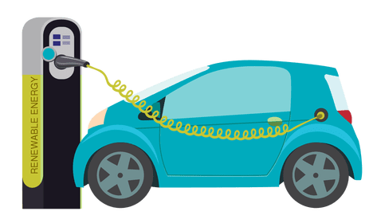
Novos padrões para carros estão se tornando um fenômeno global, como regras mais rígidas na China, na União Europeia ou nos Estados Unidos. Conforme o mundo se aproxima da marca de dois bilhões de veículos, garantir que esses carros emitam menos poluição será crucial, seja por meio de motores de combustão interna mais eficientes ou híbridos melhores. Carros elétricos também podem ajudar, desde que a eletricidade não venha da queima de combustíveis fósseis.
Também é muito importante que usinas elétricas estejam enfrentando exigências cada vez mais rígidas para a poluição do ar.
Além disso, novos padrões de eficiência para eletrodomésticos, de ar-condicionado a lavadora, ajudaram a limitar o crescimento da demanda energética, além de melhorias em tecnologia básica, como diodos emissores de luz (LEDs) substituindo lâmpadas incandescentes menos eficientes.
Links de sites com mais informações o tópico:
Soluções para mudanças climáticas que já funcionam.
Diminuição de emissões de metano
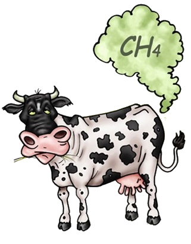
A atividade agropecuária a principal responsável pelo aumento das emissões de gás metano na atmosfera. Na agricultura, o cultivo do arroz irrigado por inundação e a queima dos resíduos agrícolas são as principais responsáveis pela emissão de gás metano. A pecuária responde pelo processo de fermentação dos alimentos que ocorre no sistema digestivo dos ruminantes, o que leva à liberação de uma significativa quantidade de gás metano para a atmosfera. O esterco produzido pelos animais também tem potencial para liberar um grande volume desse gás.
A liberação do metano também ocorre nos lixões, aterros sanitários e depósitos de esgoto, nos quais o gás escapa para atmosfera através do solo.
Nas atividades pecuárias, pesquisas apontam que a solução mais eficaz para o controle da emissão de metano na atmosfera está ligado à diminuição dos ciclos de produção e a medidas que minimizem a produção de gás metano provenientes dos processos de digestão dos animais como, por exemplo, a melhoria da dieta do gado (uma melhor nutrição dos animais diminui a carência de nutrientes) e a melhoria dos pastos (fertilização adequada dos solos).
Quanto a produção de CH4 que provém do lixo, a prática adotada por alguns aterros de queimar o metano gerado já é uma opção para seu controle, uma vez que, nesse processo de combustão, o gás metano se transforma em dióxido de carbono, um componente mais fácil de ser sequestrado da atmosfera. Outra opção, mais produtiva, é o aproveitamento energético do metano proveniente dos lixões transformando-os em energia elétrica através de usinas de biogás instaladas para esse fim nos próprios aterros.
Links de sites com mais informações o tópico:
Gás metano.
Gás metano e o efeito estufa.
Diminuição de emissões de óxido nitroso
Dentre os setores que mais emitem o óxido nitroso, a agricultura é o maior responsável pela emissão anual: cerca de 66% da emissão total. Para esse setor não é contabilizado apenas a emissão direta de N2O a partir da aplicação de fertilizantes, mas também as emissões diretas e indiretas provenientes do processo de produção de fertilizantes sintéticos, de esterco animal, animais criados em pastos, lixiviação e manejo de esterco.
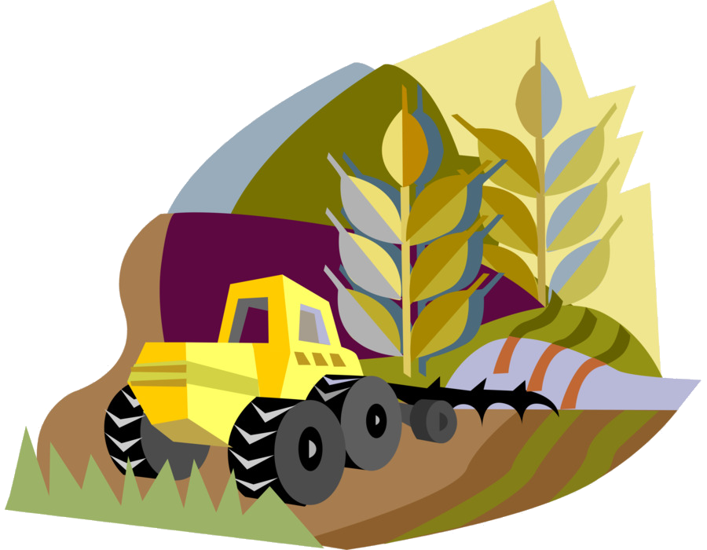
Algumas medidas na aplicação e manuseio de fertilizantes e esterco podem ajudar a reduzir este impacto:
Testar regularmente o mecanismo de distribuição de fertilizante/esterco, para garantir que a aplicação está sendo precisa;
Assegurar-se de que a pessoa que está aplicando o fertilizante/esterco esteja bem treinada para aplicar o mínimo necessário;
Realizar análises de solo para estabelecer a quantidade necessária de fertilizante;
Tentar utilizar mais esterco do que fertilizantes inorgânicos;
Melhoramento em técnicas de manuseio de esterco.
Além disso, existe uma substância chamada dicianodiamida, mais conhecida como DCD, que ajuda na diminuição da emissão de óxido nitroso causada pelas reações químicas causadas pelo contato da urina bovina com o solo. O DCD bloqueia as reações que levam à formação do gás poluente ao inibir o processo de nitrificação que age sobre o amônio liberado no solo via urina.
O DCD já é utilizado para reduzir a emissão de óxido nitroso em alguns países. Em regiões de clima temperado, a substância chega a reduzir as emissões em até 60%, como é o caso da Nova Zelândia.
Sua eficiência no Brasil é questionada, devido principalmente às condições climáticas, que interferem no tempo de ação do produto no solo. Para melhor controle dos resultados no clima tropical e subtropical do Brasil, é preciso avaliar os fluxos de emissão durante as quatro estações do ano. Pesquisadores da UFPR vêm testando o emprego dessa substância no país e, se o percentual de redução da emissão do gás, que agora é de 20%, aumentar, talvez o uso comercial seja viável.
Links de sites com mais informações o tópico:
Óxido nitroso: gás emitido pelo setor agropecuário aumenta o efeito estufa.
Dicianodiamida (DCD) e seu papel na diminuição de óxido nitroso na atmosféra.
O que o cidadão comum pode fazer?
Reduzir o consumo de carne bovina
A agropecuária é uma das maiores fontes de emissão de gases de efeito estufa no Brasil, apresentando 61% das emissões de gases de efeito estufa (GEE) totais do país. As principais formas em que isso ocorre são por meio de desmatamento, queimadas e digestão de animais.
Por isso, é necessário que a população repense sua alimentação e diminua o consumo de carne bovina, procurando substitui-la, quando possível, por outras fontes de proteína – preferencialmente vegetais.
Evitar o uso de canudos e copos descartáveis
Esses utensílios são usados por poucos minutos e sua produção emite gases de efeito estufa, além de serem produzidos a partir de matéria prima fóssil, de um subproduto do petróleo. Assim, as pessoas devem preferir recipientes duráveis, que poderão ser utilizados várias vezes, aproveitando assim o mais longamente possível os recursos consumidos na sua fabricação.
Evitar o uso do carro sempre que possível.
Para percursos de até 3 km de distância, ir a pé é a melhor escolha, pois além de ser bom para a saúde, elimina a emissão de gases de efeito estufa que seria causada pela queima de combustíveis fósseis caso esse trajeto fosse percorrido com um carro.
Se uma pessoa trocar o carro pela caminhada, por exemplo, cinco vezes na semana, em um curto percurso (1,5 km no total de ida e volta), ao longo de sua vida, será evitada a emissão de uma quantidade de GEE equivalente àquela emitida na produção de energia elétrica para uma residência por 41 anos!
Não desperdiçar alimentos
O processo de decomposição dos alimentos também libera gases de efeito estuda, por isso, é preciso evitar desperdício. Uma boa dica é preparar somente a quantidade de comida para consumo imediato. Ainda assim, se sobrar, é possível colocar na geladeira ou congelador e comer mais tarde. Outra sugestão é reaproveitar as sobras de folhas, talos e cascas de hortaliças em receitas criativas, para evitar que essas partes nutritivas dos alimentos sejam jogadas fora.
Desligar a luz ao deixar um ambiente
É preciso economizar energia elétrica, principalmente no período mais seco do ano, o inverno. Nessa época, chove menos e os níveis dos reservatórios de água das hidrelétricas ficam mais baixos. Quando isso acontece, é necessário acionar as usinas termoelétricas, que lançam mais gases de efeito estufa na atmosfera.
Comprar roupas de segunda mão
Quando as pessoas compram roupas de segunda mão, elas ajudam a aumentar a vida útil desses produtos, fazendo valer os recursos que nela foram consumidos. Todo o processo de produção de roupas e acessórios de moda emite gases de efeito estufa, entre outros impactos ao meio ambiente e à sociedade.
Reduzir o volume do seu lixo

É preciso que as pessoas diminuam o volume de seu lixo e façam o descarte correto dos resíduos. Ao diminuir o volume de resíduos, menos terá que ser transportado seja para aterros sanitários, seja para reciclagem, o que reduz a emissão de gases de efeito estufa nesse transporte.
Comentários